Qwen 团队，Alibaba Group*
本报告介绍一系列数学专用 LLM：Qwen2.5-Math 和 Qwen2.5-Math-Instruct-1.5B/7B/72B。Qwen2.5 系列的核心创新在于将自改进理念融入从预训练、后训练到推理的整个流程：（1）在预训练阶段，使用 Qwen2-Math-Instruct 生成大规模、高质量数学数据。（2）在后训练阶段，我们通过从 Qwen2-Math-Instruct 大规模采样来开发奖励模型（RM）。随后，将该 RM 应用于 监督微调（SFT）数据的迭代演进。拥有更强的 SFT 模型后，就可以迭代训练并更新 RM，继而指导下一轮 SFT 数据迭代。在最终的 SFT 模型上，我们使用最终 RM 进行强化学习，得到 Qwen2.5-Math-Instruct。（3）此外，在推理阶段，使用 RM 指导采样，优化模型性能。
Qwen2.5-Math-Instruct 支持中文和英文，并具备先进的数学推理能力，包括 chain-of-thought（CoT）和 tool-integrated reasoning（TIR）。我们在 GSM8K、MATH、GaoKao、AMC23 和 AIME24 等 10 个中英文数学数据集上评估模型，难度范围从小学数学到数学竞赛题。旗舰模型 Qwen2.5-Math-72B-Instruct 显著优于开源模型及领先的闭源模型（例如 GPT-4o、Gemini Math-Specialized 1.5 Pro）。尤其是在有挑战性的 AMC 2023 上，借助 RM，Qwen2.5-Math-72B-Instruct 成功解出几乎全部题目。Qwen2.5-Math-7B-Instruct 的性能超过 Qwen2-Math-Instruct 72B。在 CoT 和 TIR 设置下，其 MATH 得分分别达到 83.6 和 85.3。即使是我们最小的 1.5B 模型，使用 Python Interpreter 时 MATH 得分也达到约 80，超过该领域当前的大多数模型。我们希望 Qwen2.5-Math 能为社区解决复杂数学问题作出贡献。
Qwen2.5-Math 系列的基础模型、指令模型和 RM 可在 Hugging Face1 与 ModelScope2 获取，评测脚本可在 GitHub3 获取。我们还在 Qwen-Agent4 中开发了支持 TIR 模式的演示，允许在本地运行代码，体验 Qwen2.5-Math 的 tool-integrated reasoning 能力。
* 作者按名字的字母顺序排列。† 通讯作者。
1 https://huggingface.co/Qwen
2 https://modelscope.cn/organization/qwen
3 https://github.com/QwenLM/Qwen2-Math
4 https://github.com/QwenLM/Qwen-Agent
1 引言 3
2 Qwen2.5-Math 预训练 4
3 Qwen2.5-Math 后训练 5
3.1 监督微调 6
3.1.1 chain-of-thought 数据合成 6
3.1.2 tool-integrated reasoning 数据合成 6
3.2 奖励模型训练 7
3.2.1 数据合成 7
3.2.2 训练策略 7
3.3 强化学习 7
4 去污染 8
5 评测 9
5.1 基础模型 9
5.2 指令模型 9
6 结论 14
A Qwen2-MATH 解答奥赛级题目的案例研究 19
A.1 数论 19
A.2 代数 22
A.3 计数与概率 27
A.4 几何 30
B 评测使用的提示 31
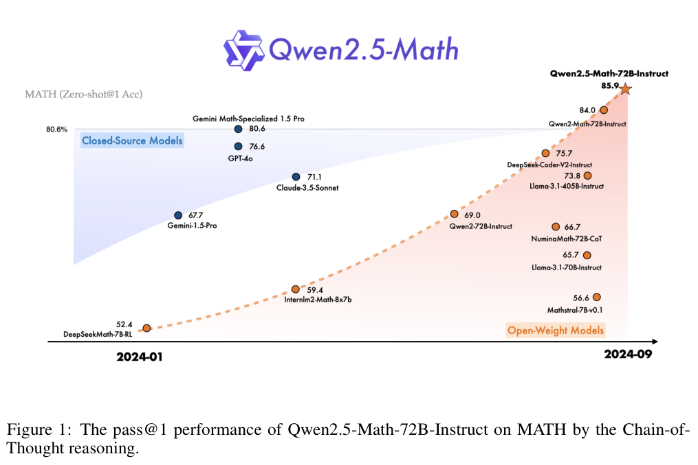
过去一年，我们投入了大量精力研究并增强 LLM 的推理能力，尤其关注其解决算术和数学问题的能力。本报告介绍一系列数学专用 LLM：Qwen2.5-Math、Qwen2.5-Math-RM 和 Qwen2.5-Math-Instruct-1.5B/7B/72B。为了全面介绍 Qwen2.5-Math 背后的技术进展，我们还详细概述其前身 Qwen2-Math（Qwen, 2024）。
我们引入一系列自改进技术，在 Qwen2-Math 基础上开发 Qwen2.5-Math 模型。自改进技术利用 LLM 自身提供的监督（Cao et al., 2024）。具体来说，我们在 Qwen2.5-Math 训练中从三个方面应用自改进。在预训练中，我们使用 Qwen2-Math-Instruct 大规模合成数学问题及相应回答，丰富 Qwen2.5-Math 的预训练语料。在后训练中，我们通过从先前模型大规模采样来训练 RM，并将其应用于 SFT 数据的迭代演进。这种增强训练出的更好数学模型带来了更稳健的 RM Qwen2.5-Math-RM。随后，我们将这一 RM 用于强化学习，以及推理期间的 best-of-N 采样。与前身相比，合成数据与评判对 Qwen2.5-Math 的提升起着重要作用。
具体而言，开发 Qwen2-Math 和 Qwen2.5-Math 的整体流程见图 2。首先，在名为 Qwen Math Corpus v1 的高质量数学预训练数据集上训练 Qwen2-Math 基础模型，该数据集包含约 7000 亿 token。其次，我们基于 Qwen2-Math-72B 训练数学专用 RM Qwen2-Math-RM，以构建 Qwen2-Math-Instruct 模型。这个 RM 通过拒绝采样（Yuan et al., 2023）构建 SFT 数据。此外，RM 在强化学习阶段起关键作用，我们在 SFT 之后采用 GRPO（Shao et al., 2024）。第三，我们利用 Qwen2-Math-72B-Instruct 模型合成更多高质量数学预训练数据，作为 Qwen Math Corpus v2 的基础。更新后的语料包含超过 1 万亿 token，用于预训练 Qwen2.5-Math 模型。最后，我们采用与 Qwen2-Math-Instruct 类似的过程构建 Qwen2.5-Math-RM 和 Qwen2.5-Math-Instruct 模型。这一阶段的重要区别是，训练 Qwen2.5-Math-Instruct 模型时既包含英文和中文 CoT 数据，也包含——
（接第 3 页）TIR 数据，而 Qwen2-Math-Instruct 仅使用英文 CoT 数据。
我们在八个中英文数学基准上评估数学专用模型。值得关注的是，Qwen2.5-Math-7B 基础模型在 GSM8K（Cobbe et al., 2021）、MATH（Hendrycks et al., 2021b）和 GaoKao Math Cloze（Zhang et al., 2023）上分别取得 91.6、55.4 和 57.6 分，超过 Qwen2-72B（Yang et al., 2024）通用模型在相同数据集上的 89.5、51.1 和 55.9 分。此外，Qwen2.5-Math-72B 基础模型在 MATH 基准上创造了新的最佳水平，达到 66.8 分，比 Qwen2-Math-72B 提高 5.3 分，比 Qwen2-72B 提高 15.7 分。
对于 Instruct 模型，在 CoT 模式下，Qwen2.5-Math-1.5B-Instruct 在大多数指标上超过当前所有可用的开源模型，包括参数量高达 70B 的模型。此外，Qwen2.5-Math-7B-Instruct 的性能几乎追平 Qwen2-Math-72B-Instruct，表明训练数据和策略的提升可以在一定程度上弥补参数规模的扩大。Qwen2.5-Math-72B-Instruct 在英文和中文上分别以平均 4.4 和 6.1 分的优势超过 Qwen2-Math-72B-Instruct，成为当前最好的开源数学模型。此外，所有规模模型的中文数学解题能力均显著提升。在新引入的 TIR 模式下，性能较 CoT 进一步增强。例如，72B 模型在 MATH 基准上接近 90 分，即使 1.5B 模型也达到约 80 分，表明 Qwen2.5 已高度擅长利用 Python Interpreter 进行准确的数学计算。
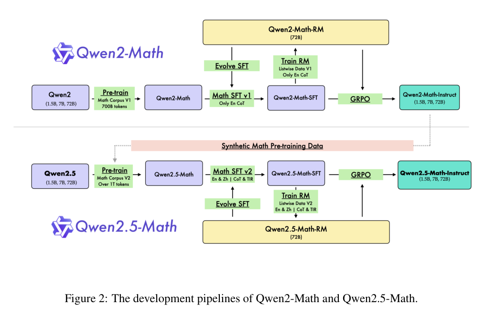
在数学预训练中，我们主要关注构建数学内容丰富的高质量数据集。该数据集涵盖各种来源，包括数学相关网页文本、代码片段、百科全书、考试题，以及 Qwen2（Yang et al., 2024）生成的合成数学数据。组建这一预训练数据集涉及几个关键步骤：数据召回、去重、过滤、数据合成，以及数据混合比例优化。最终整理出的数据集构成预训练的基础，称为 Qwen Math Corpus v1。Qwen2-Math 基础模型以 Qwen2-1.5B/7B/72B 初始化，并使用 Qwen Math Corpus v1 进行持续预训练。
在构建 Qwen Math Corpus v1 之前，我们观察到，通用语言模型数学推理表现欠佳的原因在于预训练期间数学数据不足。现有面向数学的大规模专用 LLM 预训练工作（Shao et al., 2024; Ying et al., 2024; Lewkowycz et al., 2022a; Azerbayev et al., 2024）已经明确证明，从数字数据库中提取大量数学文本具有价值。我们的初始策略是从 Common Crawl 等网页来源召回数学数据，增加数据量。具体来说，我们使用高质量数学种子数据和通用文本数据训练 FastText（Joulin et al., 2016）分类器。我们采用迭代训练，每个 epoch 加入更多数学数据，持续增强分类器性能。为了识别语料池中遗漏的数学相关数据，我们利用已召回数据的 URL 等元信息，扩充用于检索数学数据的数据池。随后，使用包括 MinHash（Broder, 2000）在内的去重技术过滤相似数学文档。
收集大量数学数据之后，我们将重点转向提高其质量。为此，我们采用基于语言模型的过滤技术，进一步整理数据集。具体来说，我们通过提示工程增强 Qwen2-0.5B-Instruct（Yang et al., 2024），评估候选数据项的质量。获得更高分数、即语言模型认为质量更高的数据，会优先纳入最终数据集。除了召回多样化数学文档和过滤低质量数据，我们还借鉴先前生成合成数学数据的工作（Yue et al., 2024; Zhou et al., 2024）。我们使用 Qwen2-72B-Instruct 合成大量数学预训练语料。在这一阶段，已收集的高质量数学数据被用作参考材料。通过 Qwen2-72B-Instruct，我们：（1）从这些参考材料中提取并完善已有数学问答数据；（2）直接生成新的数学问答对。
在最后阶段，我们使用较小的数学专用语言模型 Qwen2-Math-1.5B 对数据混合比例开展消融研究。基于研究结果，我们构建总计包含 7000 亿 token 的 Qwen Math Corpus v1。我们从对应 Qwen2-1.5B/7B/72B 基础模型的中间 checkpoint 初始化 Qwen2-Math-1.5B/7B/72B 预训练。随后，在 Qwen Math Corpus v1 上以 4K 上下文长度对这些模型进行持续预训练。
完成 Qwen2-Math 基础模型训练后，我们通过三个主要途径进一步升级为 Qwen2.5-Math：（1）我们使用按第 3 节步骤进一步后训练的 Qwen2-Math-72B-Instruct 模型，合成更多高质量数学预训练数据。（2）我们经过多轮召回，从网页文档、书籍和代码仓库中汇集更多高质量数学数据，尤其是中文数据。通过这些工作，我们整理出用于 Qwen2.5-Math-1.5B/7B/72B 预训练的 Qwen Math Corpus v2，同时维持 4K 上下文长度。相比 Qwen Math Corpus v1，v2 的 token 总量从 700B 增至超过 1T。（3）我们不再从 Qwen2 系列初始化，而是使用 Qwen2.5 系列基础模型初始化参数，因为它们在语言理解、代码生成和文本推理方面具有更强能力。Qwen2.5-Math 模型在 Qwen Math Corpus v2 上持续预训练，其数学预训练设置与 Qwen2-Math 类似。受益于数据集和基础模型的提升，Qwen2.5-Math 的数学推理能力在 Qwen2-Math 基础上进一步提高。
完成广泛的数学预训练后，我们开展后训练，进一步增强 Qwen-Math 的数学逻辑推理能力，重点关注 CoT 和 TIR。我们尤其研究两个关键挑战：（1）如何自动生成大量高质量且可靠的 CoT 和 TIR 标注；（2）如何将这些标注有效用于 SFT 和强化学习。
我们希望 Qwen-Math 擅长两项核心能力：通过逐步自然语言推理解决数学问题（Wei et al., 2022），以及利用外部工具（例如 Python interpreter）处理复杂的数学或算法推理任务（Yue et al., 2023）。我们分别为 CoT 和 TIR 构建专门数据集，并将它们合并，对模型进行联合训练。所有模型均以 4,096 token 序列长度训练 3 个 epoch。对于 72B 模型，我们使用 256 的 batch 大小和 \(5 \times 10^{-6}\) 的学习率。对于 1.5B 和 7B 模型，我们将 batch 大小设为 128，学习率设为 \(2 \times 10^{-5}\)。训练期间，学习率逐渐衰减至最终值 \(7 \times 10^{-7}\)。
问题构建。CoT 数据集广泛收集了 580K 道英文和 500K 道中文数学题，包括已有标注题和合成题。已有标注题来自 GSM8K（Cobbe et al., 2021）、MATH（Hendrycks et al., 2021b）及 NuminaMath（LI et al., 2024）训练集等成熟来源。为了增强 Qwen2.5-Math 的中文推理能力，我们进一步用独有的 K-12 题库中的更多中文数学题丰富数据集。合成题使用 MuggleMath 方法（Li et al., 2024b）从已有标注题演化而来。为保持不同题目难度层级的均衡分布，我们使用难度评分模型有效地分类题集。
回答构建。我们采用迭代方法，在奖励建模和标注答案的指导下利用拒绝采样，逐步提高回答质量（Yuan et al., 2023）。每轮迭代，部署当前最优模型，为给定题目生成多条推理路径，扩大候选解答池。对于有标注答案的题目，我们从池中选择最终答案正确的 top-k 推理路径。对于缺少确定答案的合成题，我们使用加权多数投票机制推断最可能正确的推理路径。从中选择奖励分数最高的 top-k 路径。在开发 Qwen2.5-Math 时，额外使用 Qwen2-Math-Instruct 模型进行一轮迭代，进一步完善回答质量。最终 CoT 训练集包含 2000K 条英文样本和 500K 条中文样本。
需要认识到，虽然 CoT 提示在增强 LLM 推理能力方面起重要作用，但在实现计算精确性和处理复杂数学或算法问题时仍面临挑战，例如求二次方程的根或计算矩阵特征值（Yue et al., 2023）。为了克服这些局限，提高模型在精确计算、符号操作和算法推理方面的熟练程度，我们开发了采用 TIR 格式的数据集。这种创新格式让模型能够将 Python interpreter 作为推理任务的辅助资源。
问题构建。TIR 数据集由 190K 道已有标注题和 205K 道合成题组成。已有标注题来自 GSM8K（Cobbe et al., 2021）、MATH（Hendrycks et al., 2021b）、CollegeMath（Tang et al., 2024a）及 NuminaMath（LI et al., 2024）等成熟基准的训练集。合成题采用 MuggleMath（Li et al., 2024b）和 DotaMath（Li et al., 2024a）的技术生成，这些技术旨在促进 GSM8K 和 MATH 训练集内的问题演化。此外，我们选取 75K 道已有标注题，使用 Qwen2-72B（Yang et al., 2024）译为中文，以增强模型的中文推理能力。
回答构建。对于已有标注题，我们使用在线拒绝微调（RFT）（Yuan et al., 2023; Singh et al., 2024），迭代生成最终答案与参考答案一致的 TIR 路径。每轮 RFT 迭代，我们用当前最优模型在不同温度下进行多次核采样，对特别困难的题目增加采样量。每轮迭代后，为增强数据多样性，我们对回答进行去重，然后用清理后的数据集——
（接第 6 页）微调模型，进入下一轮迭代。对于合成题，我们采用在线 RFT 过程得到的最优模型生成推理样本。使用多数投票选择最可能正确的推理路径，随后将其纳入整体数据集。
为了在选择 SFT 数据和随后的强化学习训练阶段提供超越最终答案的监督信号，我们分别为 Qwen2-Math 和 Qwen2.5-Math 开发了数学 RM Qwen2-Math-RM 和 Qwen2.5-Math-RM。这些 RM 专门针对推理质量和中间步骤提供更细粒度的反馈，在整个训练过程中指导模型，最终促进更稳健的模型提升。
开发 Qwen2-Math-RM 时，我们使用 206K 道英文数学题，每题配有从 Qwen2-Math 中间版本采样的 6 个候选回答。对于 Qwen2.5-Math-RM，我们进一步增强其对中文和 TIR 模式的支持，用更多样的 361K 道英文和 257K 道中文数学题训练，每题均配有从 Qwen2.5-Math 采样的 6 个回答。这种扩充确保 Qwen2.5-Math-RM 能在更广泛的题型和语言范围内提供监督反馈。
为了建立回答之间的偏好信号，我们检查回答的最终答案，判断是否正确。答案正确的回答标为正例，答案错误的回答标为负例，从而自然形成回答间的排序关系。随后，过滤掉全部回答均正确或均错误的情况。然而，为避免只保留过于简单数据的潜在问题，我们加入来自不同中间版本和不同规模模型的回答，丰富数据集。这一策略确保问题难度分布更均衡，并保持正负回答比例均衡。
我们从 SFT 模型初始化 RM。在架构方面，将原本用于 next-token 预测的语言建模头替换为由两个线性层组成的标量值头。如前所述，RM 训练集中，每个问题配有 6 个回答，包括正负候选。若有 \(k\) 个正例回答，则其余 \(6-k\) 个是负例。遵循 Ouyang et al.（2022），RM 损失函数可写为：
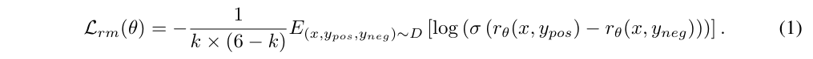
这里，\(r_{\theta }(x, y)\) 表示 RM 的输出，其中 \(x\) 是问题，\(y\) 是相应回答。我们不将它们拆成多个独立配对并逐对计算损失，而是采用 listwise 方法，直接在有效配对上计算排序损失。这种方法同时增强训练效率和效果。
问题选择。强化学习训练的问题从 RM 训练集中选取。我们使用不同规模的 SFT 模型，对每题重新采样 8 个回答，将每个回答与标准答案比较，分类为正确或错误。在强化学习阶段，我们的主要目标是确保模型对能够回答正确的问题持续给出正确答案。因此，仅保留 8 个回答中有 2 至 5 个正确的问题。少于 2 个正确答案的问题会被排除，因为这表明当前 Math 模型缺乏——
（接第 7 页）从中学习的基本能力。同样，超过 5 个回答正确的问题也被省略，因为模型在这些情况下已展现出能力，无需进一步训练。最终，我们保留 66K 道问题用于训练。
组相对策略优化（GRPO）。如 Shao et al.（2024）所介绍，GRPO 是专门针对 LLM 设计的强化学习方法，无需像 PPO 那样额外近似价值函数。GRPO 将一组采样输出的平均奖励作为基线，计算每个输出的优势。GRPO 的目标由式 2 定义：
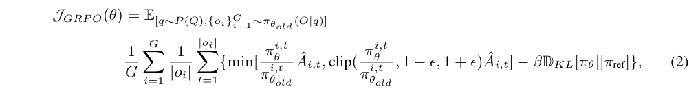
其中，\(\pi ^{i,t} = \pi (o_{i,t} | q, o_{i,<t})\)，\(G\) 是一组回答的数量。\(\pi _{\mathrm{ref}}\)、\(\pi _{\theta }\) 和 \(\pi _{\mathrm{old}}\) 分别是参考模型、训练模型和采样模型。\(q\) 和 \(\{o_{i}\}^{G}_{i=1}\) 分别是训练中的问题和生成回答集合。每个回答的优势 \(\hat{A} _{i}\) 按 \(\hat{A} _{i} = (r_{i} - \operatorname{mean}(r_{i})) / \operatorname{std}(r_{i})\) 计算。随后，该序列级优势作为 \(\hat{A} _{i,t}\) 应用于回答中的每个 token。
奖励塑形。我们结合基于规则的验证器和 RM 的奖励，塑造总体奖励信号。基于规则的验证器从每个回答提取候选答案，并与标准答案比较。
给定 RM 的输出 \(r_{m} \in \mathbb{R}\)，以及基于规则的验证器的稀疏奖励 \(r_{v} \in \{0, 1\}\)，总体奖励计算如下：
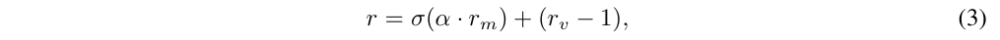
其中，所有实验均将 \(\alpha\) 设为 0.5。
这种塑形机制确保正确回答始终获得比错误回答更高的总体奖励。在正确和错误两个组内，根据 RM 的分数排序回答。
原文随后有残缺短语“ecially in hard samples.”，可辨部分为“在困难样本中”；原文前半部分缺失。
实现。我们的实验基于开源 RLHF 框架 ChatLearn5 实现。基于规则的验证器的核心实现与评测6 所用实现类似。所有不同参数规模的策略模型都使用同一个 RM 训练。每个问题采样 32 个回答。将一对问题和回答视为一个样本，训练 7B 和 72B 时，每个 episode 的样本数量分别为 4,096 和 2,048。所有模型均采用 512 的 global batch 大小训练。7B 和 72B 的学习率分别为 \(1 \times 10^{-5}\) 和 \(5 \times 10^{-6}\)。所有训练的 KL 系数均为 \(1 \times 10^{-3}\)。在 TIR 的强化学习中，我们屏蔽 Python 执行器提供的所有输出 token。
去污染对于确保模型性能评测无偏至关重要。遵循先前工作（Yang et al., 2024），我们通过 13-gram 匹配排除可能被污染的训练样本。为了提高匹配准确性，我们进行文本归一化，去除无关标点和符号。为进一步减少假阴性，尤其针对常见数学表达式，我们引入额外条件：最长公共子序列的比例必须超过 0.6，样本才被视为污染。对于预训练数据，我们对照 GSM8K（Cobbe et al., 2021）、MATH（Hendrycks et al., 2021b）等数据集，过滤可能被污染的样本。对于后训练数据，包括 SFT 数据、RM 训练数据和 RL 问题集，我们排除与所有报告的评测数据集相关的任何可能被污染的问题或解答。这些评测数据集包括 GSM8K（Cobbe et al., 2021）、MATH（Hendrycks et al., 2021b）、Minerva Math（Lewkowycz et al., 2022b）、Gaokao 2023 En（Liao et al., 2024）、Olympiad Bench（He et al., 2024）、College Math（Tang et al., 2024b）、——
5 https://github.com/alibaba/ChatLearn
6 https://github.com/QwenLM/Qwen2-Math/tree/main/evaluation
（接第 8 页）MMLU STEM（Hendrycks et al., 2021a）、GaoKao（Zhong et al., 2024）、CMATH（Wei et al., 2023）、CN Middle School 24、AIME 24 和 AMC 23。分析污染样本时，我们发现部分现有训练数据集（例如 MATH 训练集）中，相当比例的题目与测试数据集中的题目具有高度相似的概念或结构。虽然这些变体并非完全重复，但可能损害评测完整性。因此，我们继续从训练语料中排除此类样本。表 1 给出训练集与测试集中识别出的相似题示例。
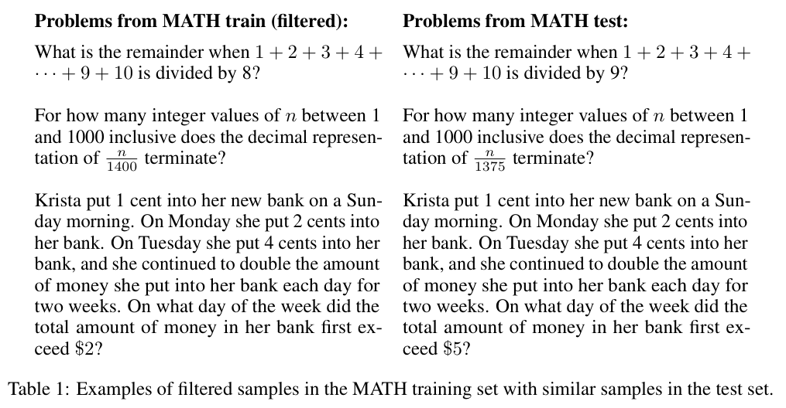
我们在三个广泛使用的英文数学基准 GSM8K（Cobbe et al., 2021）、MATH（Hendrycks et al., 2021b）和 MMLU-STEM（Hendrycks et al., 2021a）上评估 Qwen2-Math 与 Qwen2.5-Math 基础模型。此外，还评估三个中文数学基准 CMATH（Wei et al., 2023）、GaoKao Math Cloze（Zhong et al., 2024）和 GaoKao Math QA（Zhong et al., 2024）。所有评测均采用少样本 CoT 提示。这些基准的提示见附录 B。对于通用模型，我们报告 LLama-3.1-8B/70B/405B（AI@Meta, 2024）和 Qwen2-1.5B/7B/72B（Yang et al., 2024）的结果。对于专用模型，以 DeepSeekMath-Base-7B（Shao et al., 2024）、DeepSeek-Coder-V2-Lite-Base（Zhu et al., 2024）和 Intermln2-Math-Base-20B（Ying et al., 2024）为基线。
结果见表 2。可以看到，Qwen2.5-Math 系列最小模型 Qwen2.5-Math-1.5B 在 GSM8K、MATH、CMATH、GaoKao Math Cloze 和 Gaokao Math QA 上超过所有专用基线。此外，中等规模的 Qwen2.5-Math-7B 在 GSM8K 和 MATH 上分别取得 91.6 和 55.4 分，超过 Qwen2-72B 的 89.5 和 51.1 分，以及 Llama-3.1-405B 的 89.0 和 53.8 分。旗舰 Qwen2.5-Math-72B 在 MATH、CMATH、Gaokao Math Cloze 和 Gaokao Math QA 上达到新的 SOTA，其中 MATH 为 66.8 分。相比 Qwen2-Math-1.5B/7B/72B，Qwen2.5-Math-1.5B/7B/72B 在所有基准上均显著提升。例如，Qwen2.5-Math-1.5B/7B/72B 在 MATH 上分别提高 5.4、5.0、6.3 分，在 Gaokao Math QA 上分别提高 3.4、12.2、19.8 分，证明 Qwen Math Corpus v2 的有效性。
我们在中英文数学基准上评估 Qwen2-Math-Instruct。除了 GSM8K（Cobbe et al., 2021）和 MATH（Hendrycks et al., 2021b）等常用基准，我们还纳入更具挑战性的考试，全面检验 Qwen2-Math-Instruct 与 Qwen2.5-Math-Instruct 的能力，例如 OlympiadBench（He et al., 2024）、——
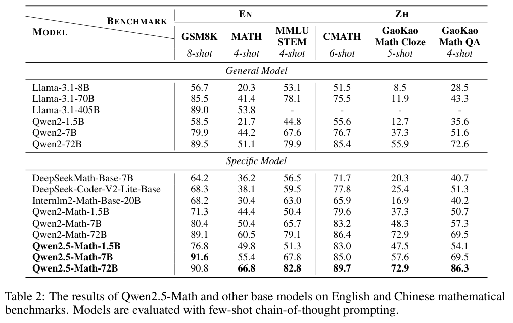
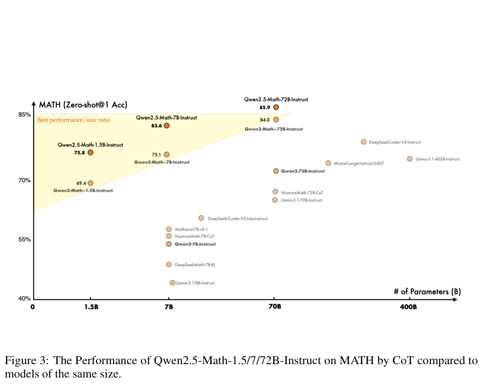
（接第 9 页）CollegeMath（Tang et al., 2024a）、GaoKao 2023 En（Liao et al., 2024）、AIME20247 和 AMC20238。对于中文数学基准，我们使用 CMATH（Wei et al., 2023）、GaoKao（包括 GaoKao I/II 20249、GaoKao-Math-QA（Zhong et al., 2024）、GaoKao-Math-Cloze（Zhong et al., 2024）和收集的 91 道 2024 年高考题），以及 CN Middle School 24（收集的 101 道 2024 年中国中考题）。我们在所有基准上报告零样本设置下的 greedy、Maj@8 和 RM@8 性能，选择题基准除外：MMLU STEM，以及 GaoKao 和 CN Middle School 24 中的选择题采用 5-shot 设置。
我们以 Qwen2-1.5/7/72B-Instruct（Yang et al., 2024）、Llama-3.1-8/70B-instruct（AI@Meta, 2024）和 GPT4o-2024-08-06（OpenAI, 2024）作为通用模型基线。此外，以 DeepSeekMath-7B-RL（Shao et al., 2024）、DeepSeek-Coder-V2-Lite-Instruct（Zhu et al., 2024）、Interlm2-math-plus-7B/20B/mixtral8x7B（Ying et al., 2024）、Mathstral-7B-v0.1（Mistral-AI, 2024）和 NuminaMath-7/72B-CoT（LI et al., 2024）作为专用模型基线。
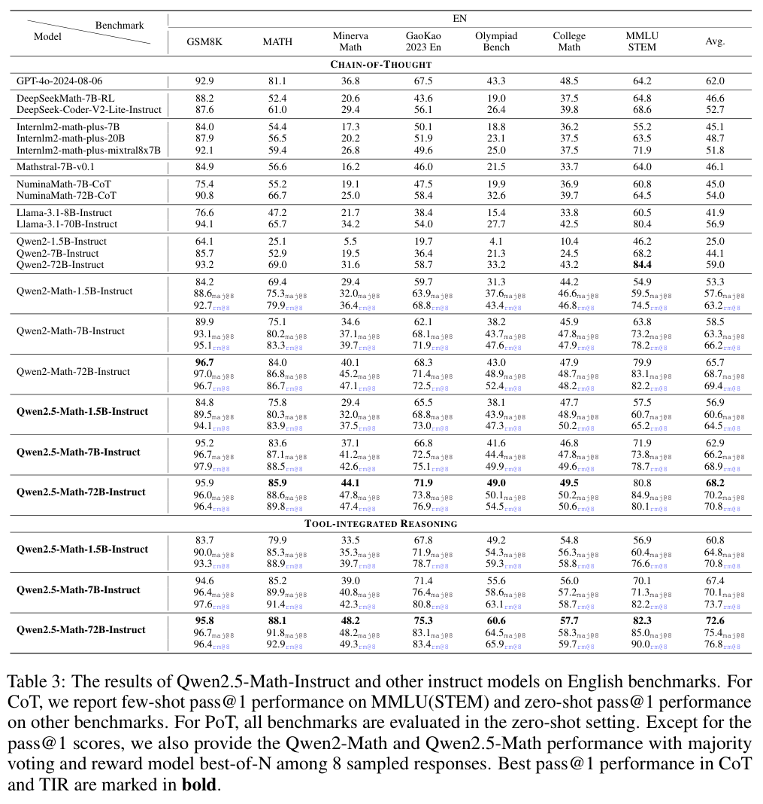
先分析英文基准上的性能。如表 3 所示，可以得出以下结论：（1）Qwen2-Math-Instruct 展现了出色的能力。1.5B——
7 https://huggingface.co/datasets/AI-MO/aimo-validation-aime
8 https://huggingface.co/datasets/AI-MO/aimo-validation-amc
9 https://github.com/llmeval/Llmeval-Gaokao2024-Math
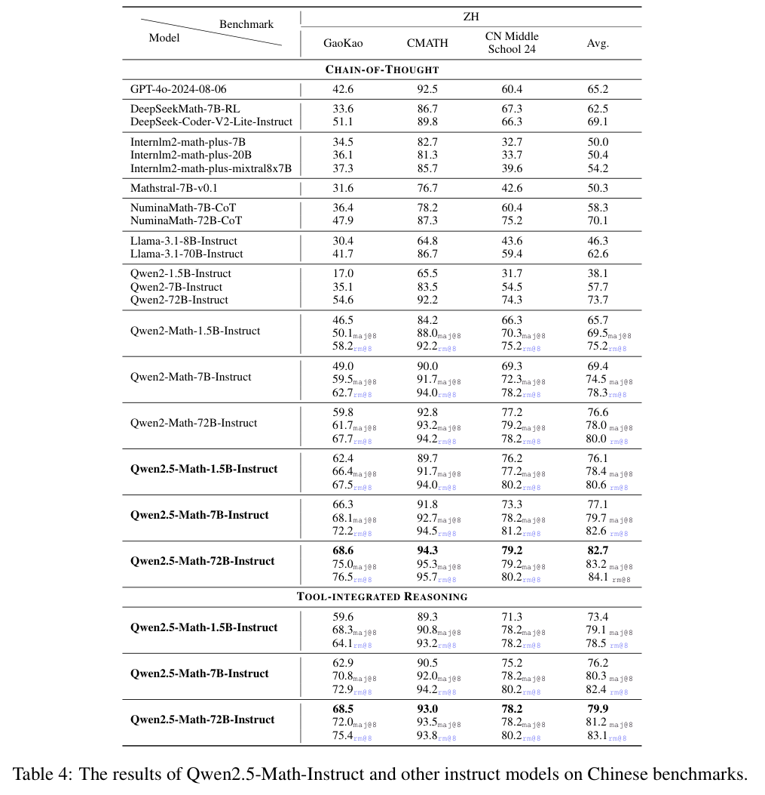
（接第 11 页）模型的平均得分高于当前所有 70B 以下模型。7B 模型与 Qwen2-72B-Instruct 表现相当，而 Qwen2-Math-72B-Instruct 比最新版本 GPT-4o 高 3.7 分。（2）Qwen2.5-Math-Instruct 的性能在 Qwen2-Math-Instruct 基础上进一步升级。在传统 CoT 模式中，Qwen2.5-Math-Instruct 的 1.5B 和 7B 模型分别达到与 Qwen2-Math-Instruct 的 7B 和 72B 模型相当的结果，体现跨规模提升。Qwen2.5-Math-72B-Instruct 的平均得分比当前最佳模型高 2.5 分，比 GPT-4o 高 6.2 分。这表明，训练数据与策略的改进可以提供一条仅扩大模型规模之外的性能提升路径。（3）Qwen2.5-Math-Instruct 引入的 TIR 模式非常有效。借助 Python Interpreter，7B 模型已追平 Qwen2.5-Math-72B-Instruct 的性能。这表明，通过外部工具进行精确数学计算可以显著帮助 LLM 推理。很多情况下，LLM 的推理过程正确，但可能出现计算错误。（4）我们的 RM 表现出色。在几乎所有基准和模型上，RM@N 得分显著优于 Maj@N。这为今后改进强化学习策略提供了可靠的性能参照。我们很可能很快就能看到 greedy decoding 的模型在 MATH 上超过 90 分，即使在 7B 规模也是如此。
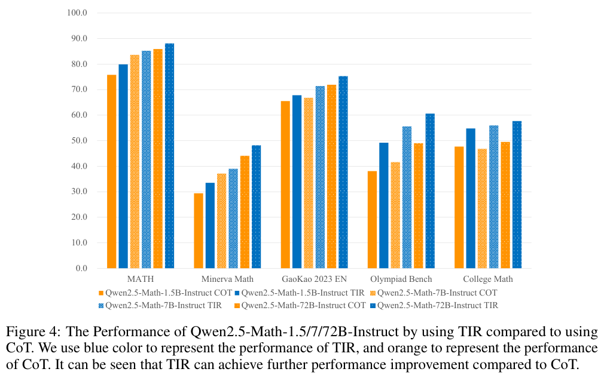
现在转向表 4，分析中文基准上的性能。Qwen2-Math-Instruct 未加入专门的中文数学相关训练数据。不过，得益于 Qwen2 强大的语言迁移能力，Qwen2-Math-1.5B-Instruct 的中文平均得分已经超过 GPT-4o。在开发 Qwen2.5-Math-Instruct 时，我们有意加入中文专用数学后训练数据，显著提升中文性能。Qwen2.5-Math-1.5B-Instruct 取得与 Qwen2-Math-72B-Instruct 类似的结果，而 Qwen2.5-Math-72B-Instruct 以 17.5 分的显著优势超过 GPT-4o。我们的 RM 在中文基准上同样表现强劲。与英文结果类似，RM@N 得分持续超过 Maj@N，凸显其有效性。不过，与英文结果的一个关键区别是，中文 TIR 模式未展现相对 CoT 模式的显著性能优势。我们将在未来研究中继续探索这一方面。
最后，我们希望在 AIME 2024 和 AMC 2023 等高难度竞赛基准上评估模型解决复杂数学问题的能力。如表 5 所示，相比 Qwen2-Math-Instruct，Qwen2.5-Math-Instruct 在困难题目上的性能显著提升。在 RM 支持下，Qwen2.5-Math-1.5B-Instruct 在 CoT 模式采用 RM@256，成功解出 AMC 2023 的 40 道题中的 29 道，显著——
（接第 13 页）超过 NuminaMath-72B CoT。此外，Qwen2.5-Math-72B-Instruct 在 TIR 模式中几乎取得满分，解出几乎全部题目。我们将这一出色表现归因于预训练期间收集和合成的大量有挑战性的数学数据。在极难的 AIME 2024 基准上，Claude3 Opus、GPT-4 Turbo 和 Gemini 1.5 Pro 在 30 道题中仅能解出 1 或 2 道。相比之下，Qwen2.5-Math-72B-Instruct 在 greedy decoding 的 CoT 模式中解出 9 道，在 TIR 模式中解出 12 道。借助 RM，Qwen2.5-Math-7B-Instruct 甚至可以解出多达 21 道题，进一步证明 Qwen2.5-Math-Instruct 出色的数学解题能力。
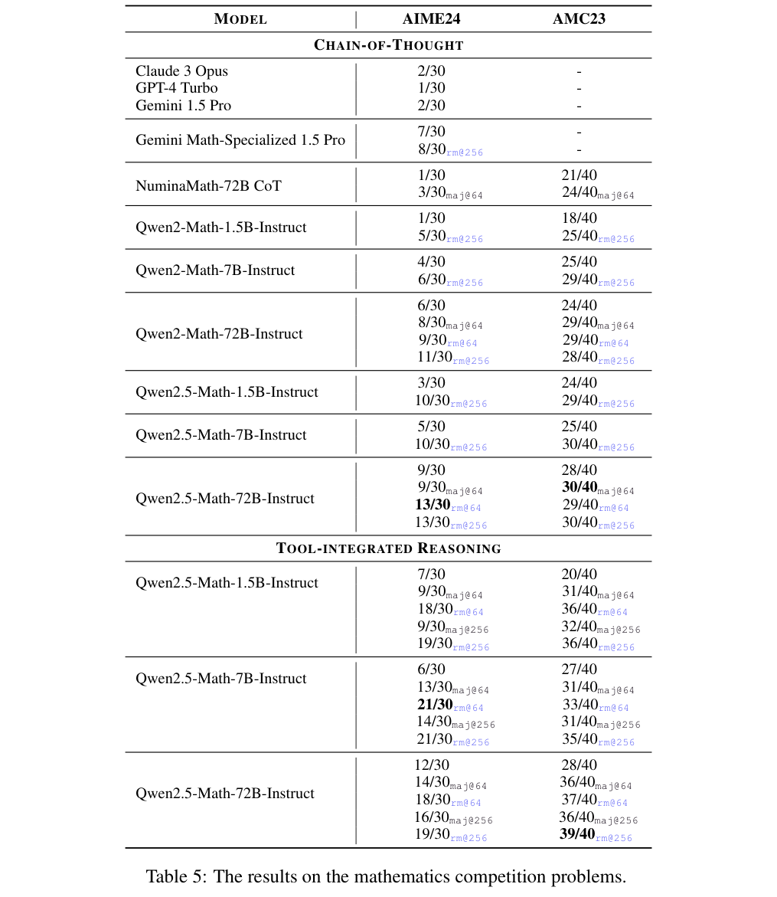
本报告介绍 Qwen2.5-Math，其几个关键技术特点为：（1）预训练阶段大量使用 Qwen2-Math 合成的数学数据；（2）后训练和推理阶段在 RM 指导下迭代生成微调数据并开展强化训练；（3）支持双语（英文和中文）问题，——
（接第 14 页）以及 CoT 和 TIR 能力。因此，Qwen2.5-Math 是迄今最先进的开源数学模型系列。Qwen2.5-Math-1.5B-Instruct 已超过先前大多数 70B 数学模型，而 Qwen2.5-Math-7B-Instruct 追平 Qwen2-Math-72B-Instruct。我们的旗舰模型 Qwen2.5-Math-7B-Instruct 超过 Qwen2-Math-72B-Instruct，在 7 个数据集上的平均得分提高 4.4 分。我们希望，Qwen2.5-Math 等专用模型的进展能持续增强 Qwen 模型的整体能力，推动我们更接近实现通用人工智能。
译注：本段“旗舰模型”型号在原文写为 Qwen2.5-Math-7B-Instruct，按原文保留。
我们衷心感谢 Qwen 团队其他成员的支持。我们也感谢 Alibaba PAI 的 ChatLearn 团队为大规模强化学习提供基础设施支持。
AI@Meta. Llama 3 模型卡, 2024. URL https://github.com/meta-llama/llama3/blob/main/MODEL_CARD.md.
Zhangir Azerbayev, Hailey Schoelkopf, Keiran Paster, Marco Dos Santos, Stephen Marcus McAleer, Albert Q. Jiang, Jia Deng, Stella Biderman, and Sean Welleck. Llemma：面向数学的开放语言模型. In ICLR. OpenReview.net, 2024.
Andrei Z. Broder. 识别和过滤近重复文档. In CPM, volume 1848 of Lecture Notes in Computer Science, pp. 1–10. Springer, 2000.
Boxi Cao, Keming Lu, Xinyu Lu, Jiawei Chen, Mengjie Ren, Hao Xiang, Peilin Liu, Yaojie Lu, Ben He, Xianpei Han, Le Sun, Hongyu Lin, and Bowen Yu. 迈向可扩展的 LLM 自动对齐：综述. CoRR, abs/2406.01252, 2024.
Karl Cobbe, Vineet Kosaraju, Mohammad Bavarian, Mark Chen, Heewoo Jun, Lukasz Kaiser, Matthias Plappert, Jerry Tworek, Jacob Hilton, Reiichiro Nakano, Christopher Hesse, and John Schulman. 训练验证器以解决数学应用题. CoRR, abs/2110.14168, 2021.
Chaoqun He, Renjie Luo, Yuzhuo Bai, Shengding Hu, Zhen Leng Thai, Junhao Shen, Jinyi Hu, Xu Han, Yujie Huang, Yuxiang Zhang, Jie Liu, Lei Qi, Zhiyuan Liu, and Maosong Sun. Olympiadbench: A challenging benchmark for promoting AGI with olympiad-level bilingual multimodal scientific problems. In ACL (1), pp. 3828–3850. Association for Computational Linguistics, 2024.
Dan Hendrycks, Collin Burns, Steven Basart, Andy Zou, Mantas Mazeika, Dawn Song, and Jacob Steinhardt. 衡量大规模多任务语言理解. In ICLR. OpenReview.net, 2021a.
Dan Hendrycks, Collin Burns, Saurav Kadavath, Akul Arora, Steven Basart, Eric Tang, Dawn Song, and Jacob Steinhardt. 使用 MATH 数据集衡量数学解题能力. In NeurIPS Datasets and Benchmarks, 2021b.
Armand Joulin, Edouard Grave, Piotr Bojanowski, Matthijs Douze, Herv´e J´egou, and Tom´as Mikolov. Fasttext.zip：压缩文本分类模型. CoRR, abs/1612.03651, 2016.
Aitor Lewkowycz, Anders Andreassen, David Dohan, Ethan Dyer, Henryk Michalewski, Vinay V. Ramasesh, Ambrose Slone, Cem Anil, Imanol Schlag, Theo Gutman-Solo, Yuhuai Wu, Behnam Neyshabur, Guy Gur-Ari, and Vedant Misra. 使用语言模型解决定量推理问题. In NeurIPS, 2022a.
Aitor Lewkowycz, Anders Andreassen, David Dohan, Ethan Dyer, Henryk Michalewski, Vinay V. Ramasesh, Ambrose Slone, Cem Anil, Imanol Schlag, Theo Gutman-Solo, Yuhuai Wu, Behnam Neyshabur, Guy Gur-Ari, and Vedant Misra. 使用语言模型解决定量推理问题. In Sanmi Koyejo, S. Mohamed, A. Agarwal, Danielle Belgrave, K. Cho, and A. Oh (eds.), Advances in Neural Information Processing Systems 35: Annual Conference on Neural Information Processing Systems 2022, NeurIPS 2022, New Orleans, LA, USA, November 28 - December 9, 2022, 2022b.
Chengpeng Li, Guanting Dong, Mingfeng Xue, Ru Peng, Xiang Wang, and Dayiheng Liu. DotaMath：通过代码辅助与自我纠正分解思路以进行数学推理, 2024a. URL https://arxiv.org/abs/2407.04078.
Chengpeng Li, Zheng Yuan, Hongyi Yuan, Guanting Dong, Keming Lu, Jiancan Wu, Chuanqi Tan, Xiang Wang, and Chang Zhou. MuggleMath：评估问题与回答增强对数学推理的影响. In Lun-Wei Ku, Andre Martins, and Vivek Srikumar (eds.), Proceedings of the 62nd Annual Meeting of the Association for Computational Linguistics (Volume 1: Long Papers), ACL 2024, Bangkok, Thailand, August 11-16, 2024, pp. 10230–10258. Association for Computational Linguistics, 2024b.
Jia LI, Edward Beeching, Lewis Tunstall, Ben Lipkin, Roman Soletskyi, Shengyi Costa Huang, Kashif Rasul, Longhui Yu, Albert Jiang, Ziju Shen, Zihan Qin, Bin Dong, Li Zhou, Yann Fleureau, Guillaume Lample, and Stanislas Polu. NuminaMath. https://github.com/project-numina/aimo-progress-prize/blob/main/report/numina_dataset.pdf, 2024.
Minpeng Liao, Chengxi Li, Wei Luo, Jing Wu, and Kai Fan. MARIO：利用代码解释器输出进行数学推理——可复现流程. In Lun-Wei Ku, Andre Martins, and Vivek Srikumar (eds.), Findings of the Association for Computational Linguistics, ACL 2024, Bangkok, Thailand and virtual meeting, August 11-16, 2024, pp. 905–924. Association for Computational Linguistics, 2024.
Team Mistral-AI. Mathstral. https://mistral.ai/news/mathstral/, 2024.
OpenAI. 你好，GPT-4o, 2024. URL https://openai.com/index/hello-gpt-4o/.
Long Ouyang, Jeffrey Wu, Xu Jiang, Diogo Almeida, Carroll Wainwright, Pamela Mishkin, Chong Zhang, Sandhini Agarwal, Katarina Slama, Alex Ray, John Schulman, Jacob Hilton, Fraser Kelton, Luke Miller, Maddie Simens, Amanda Askell, Peter Welinder, Paul F Christiano, Jan Leike, and Ryan Lowe. 借助人类反馈训练语言模型遵循指令. In S. Koyejo, S. Mohamed, A. Agarwal, D. Belgrave, K. Cho, and A. Oh (eds.), Advances in Neural Information Processing Systems, volume 35, pp. 27730–27744. Curran Associates, Inc., 2022. URL https://proceedings.neurips.cc/paper_files/paper/2022/file/b1efde53be364a73914f58805a001731-Paper-Conference.pdf.
Team Qwen. 介绍 Qwen2-Math. https://qwenlm.github.io/blog/qwen2-math/, 2024.
Zhihong Shao, Peiyi Wang, Qihao Zhu, Runxin Xu, Junxiao Song, Mingchuan Zhang, Y. K. Li, Y. Wu, and Daya Guo. DeepSeekMath：推进开放语言模型的数学推理极限. CoRR, abs/2402.03300, 2024.
Avi Singh, John D. Co-Reyes, Rishabh Agarwal, Ankesh Anand, Piyush Patil, Xavier Garcia, Peter J. Liu, James Harrison, Jaehoon Lee, Kelvin Xu, Aaron Parisi, Abhishek Kumar, Alex Alemi, Alex Rizkowsky, Azade Nova, Ben Adlam, Bernd Bohnet, Gamaleldin Elsayed, Hanie Sedghi, Igor Mordatch, Isabelle Simpson, Izzeddin Gur, Jasper Snoek, Jeffrey Pennington, Jiri Hron, Kathleen Kenealy, Kevin Swersky, Kshiteej Mahajan, Laura Culp, Lechao Xiao, Maxwell L. Bileschi, Noah Constant, Roman Novak, Rosanne Liu, Tris Warkentin, Yundi Qian, Yamini Bansal, Ethan Dyer, Behnam Neyshabur, Jascha Sohl-Dickstein, and Noah Fiedel. 超越人类数据：扩展语言模型解题的自训练, 2024. URL https://arxiv.org/abs/2312.06585.
Zhengyang Tang, Xingxing Zhang, Benyou Wang, and Furu Wei. MathScale：扩展数学推理的指令微调. In ICML. OpenReview.net, 2024a.
Zhengyang Tang, Xingxing Zhang, Benyou Wang, and Furu Wei. MathScale：扩展数学推理的指令微调. In Forty-first International Conference on Machine Learning, ICML 2024, Vienna, Austria, July 21-27, 2024. OpenReview.net, 2024b. URL https://openreview.net/forum?id=Kjww7ZN47M.
Jason Wei, Xuezhi Wang, Dale Schuurmans, Maarten Bosma, Fei Xia, Ed Chi, Quoc V Le, Denny Zhou, et al. chain-of-thought 提示激发 LLM 的推理能力. Advances in Neural Information Processing Systems, 35:24824–24837, 2022.
Tianwen Wei, Jian Luan, Wei Liu, Shuang Dong, and Bin Wang. CMATH：你的语言模型能通过中国小学数学测试吗？ CoRR, abs/2306.16636, 2023.
An Yang, Baosong Yang, Binyuan Hui, Bo Zheng, Bowen Yu, Chang Zhou, Chengpeng Li, Chengyuan Li, Dayiheng Liu, Fei Huang, Guanting Dong, Haoran Wei, Huan Lin, Jialong Tang, Jialin Wang, Jian Yang, Jianhong Tu, Jianwei Zhang, Jianxin Ma, Jianxin Yang, Jin Xu, Jingren Zhou, Jinze Bai, Jinzheng He, Junyang Lin, Kai Dang, Keming Lu, Keqin Chen, Kexin Yang, Mei Li, Mingfeng Xue, Na Ni, Pei Zhang, Peng Wang, Ru Peng, Rui Men, Ruize Gao, Runji Lin, Shijie Wang, Shuai Bai, Sinan Tan, Tianhang Zhu, Tianhao Li, Tianyu Liu, Wenbin Ge, Xiaodong Deng, Xiaohuan Zhou, Xingzhang Ren, Xinyu Zhang, Xipin Wei, Xuancheng Ren, Xuejing Liu, Yang Fan, Yang Yao, Yichang Zhang, Yu Wan, Yunfei Chu, Yuqiong Liu, Zeyu Cui, Zhenru Zhang, Zhifang Guo, and Zhihao Fan. Qwen2 技术报告. CoRR, abs/2407.10671, 2024.
Huaiyuan Ying, Shuo Zhang, Linyang Li, Zhejian Zhou, Yunfan Shao, Zhaoye Fei, Yichuan Ma, Jiawei Hong, Kuikun Liu, Ziyi Wang, Yudong Wang, Zijian Wu, Shuaibin Li, Fengzhe Zhou,
Hongwei Liu, Songyang Zhang, Wenwei Zhang, Hang Yan, Xipeng Qiu, Jiayu Wang, Kai Chen, and Dahua Lin. InternLM-Math：迈向可验证推理的开放数学 LLM. CoRR, abs/2402.06332, 2024.
Zheng Yuan, Hongyi Yuan, Chengpeng Li, Guanting Dong, Keming Lu, Chuanqi Tan, Chang Zhou, and Jingren Zhou. LLM 学习数学推理的 scaling 关系, 2023.
Xiang Yue, Xingwei Qu, Ge Zhang, Yao Fu, Wenhao Huang, Huan Sun, Yu Su, and Wenhu Chen. MAmmoTH：通过混合指令微调构建数学通才模型. arXiv preprint arXiv:2309.05653, 2023.
Xiang Yue, Tuney Zheng, Ge Zhang, and Wenhu Chen. MAmmoTH2：扩展来自网络的指令. CoRR, abs/2405.03548, 2024.
Xiaotian Zhang, Chunyang Li, Yi Zong, Zhengyu Ying, Liang He, and Xipeng Qiu. 评估 LLM 在 GAOKAO 基准上的性能. CoRR, abs/2305.12474, 2023. doi: 10.48550/arXiv.2305.12474. URL https://doi.org/10.48550/arXiv.2305.12474.
Wanjun Zhong, Ruixiang Cui, Yiduo Guo, Yaobo Liang, Shuai Lu, Yanlin Wang, Amin Saied, Weizhu Chen, and Nan Duan. AGIEval：评估基础模型的以人为中心的基准. In NAACL-HLT (Findings), pp. 2299–2314. Association for Computational Linguistics, 2024.
Kun Zhou, Beichen Zhang, Jiapeng Wang, Zhipeng Chen, Wayne Xin Zhao, Jing Sha, Zhichao Sheng, Shijin Wang, and Ji-Rong Wen. 九章 3.0：通过训练小型数据合成模型高效提升数学推理. CoRR, abs/2405.14365, 2024.
Qihao Zhu, Daya Guo, Zhihong Shao, Dejian Yang, Peiyi Wang, Runxin Xu, Y Wu, Yukun Li, Huazuo Gao, Shirong Ma, et al. DeepSeek-Coder-V2：打破闭源模型在代码智能方面的壁垒. arXiv preprint arXiv:2406.11931, 2024.
最小的正整数 \(t\) 是多少，使得存在整数 \(x_1,x_2,\ldots,x_t\)，满足
\[x_1^3+x_2^3+\cdots+x_t^3=2002^{2002}?\]
为了确定最小的正整数 \(t\)，使得存在整数 \(x_1,x_2,\ldots,x_t\) 满足方程
\[x_1^3+x_2^3+\cdots+x_t^3=2002^{2002},\]
我们首先分析立方及其和的性质。我们需要找到最小的 \(t\)，使 \(t\) 个立方数之和等于 \(2002^{2002}\)。
首先，我们注意到 \(2002\) 可以分解为质因数：
\[2002=2\times7\times11\times13.\]
因此，
\[2002^{2002}=(2\times7\times11\times13)^{2002}=2^{2002}\times7^{2002}\times11^{2002}\times13^{2002}.\]
接下来，我们考虑立方数模 9 的性质。立方数模 9 只能与 \(0\)、\(1\) 或 \(-1\) 同余。这是因为：
\[\begin{aligned}0^3&\equiv0\pmod9,\\1^3&\equiv1\pmod9,\\2^3&\equiv8\equiv-1\pmod9,\\3^3&\equiv27\equiv0\pmod9,\\4^3&\equiv64\equiv1\pmod9,\\5^3&\equiv125\equiv-1\pmod9,\\6^3&\equiv216\equiv0\pmod9,\\7^3&\equiv343\equiv1\pmod9,\\8^3&\equiv512\equiv-1\pmod9.\end{aligned}\]
现在，我们需要确定 \(2002^{2002}\bmod9\)。首先求 \(2002\bmod9\)：
\[2002\div9=222\text{，余数为 }4\quad\Rightarrow\quad2002\equiv4\pmod9.\]
因此，
\[2002^{2002}\equiv4^{2002}\pmod9.\]
接下来，我们使用 Euler 定理，该定理指出，当 \(\gcd(a,n)=1\) 时，\(a^{\phi(n)}\equiv1\pmod n\)。这里 \(\phi(9)=6\)，所以：
\[4^6\equiv1\pmod9.\]
我们可以将指数 \(2002\) 对 \(6\) 取模：
\[2002\div6=333\text{，余数为 }4\quad\Rightarrow\quad2002\equiv4\pmod6.\]
因此，
\[4^{2002}\equiv4^4\pmod9.\qquad4^4=256.\]
最后，我们求 \(256\bmod9\)：
\[256\div9=28\text{，余数为 }4\quad\Rightarrow\quad256\equiv4\pmod9.\]
所以，
\[2002^{2002}\equiv4\pmod9.\]
我们需要找到最小的 \(t\)，使 \(t\) 个立方数之和模 9 与 4 同余。立方数之和模 9 的可能值如下：
\[\begin{aligned}0&\equiv0\pmod9,\\1&\equiv1\pmod9,\\-1&\equiv8\pmod9,\\1+1&\equiv2\pmod9,\\1+(-1)&\equiv0\pmod9,\\-1+(-1)&\equiv-2\equiv7\pmod9,\\1+1+1&\equiv3\pmod9,\\1+1+(-1)&\equiv1\pmod9,\\1+(-1)+(-1)&\equiv-1\equiv8\pmod9,\\-1+(-1)+(-1)&\equiv-3\equiv6\pmod9,\\1+1+1+1&\equiv4\pmod9.\end{aligned}\]
可以看到，四个立方数之和模 9 可以与 4 同余。因此，最小的 \(t\) 是 4。
所以，使得存在整数 \(x_1,x_2,\ldots,x_t\) 满足
\[x_1^3+x_2^3+\cdots+x_t^3=2002^{2002}\]
的最小正整数 \(t\) 是
\[\boxed4.\]
对于正整数 \(n\)，用 \(s(n)\) 表示 \(n\) 的各位数字之和。设 \(P(x)=x^n+a_{n-1}x^{n-1}+\cdots+a_1x+a_0\) 为一个多项式，其中 \(n\ge2\)，且对所有 \(0\le i\le n-1\)，\(a_i\) 都是正整数。是否可能对于所有正整数 \(k\)，\(s(k)\) 与 \(s(P(k))\) 具有相同的奇偶性？
为了确定是否可能对所有正整数 \(k\)，\(s(k)\) 与 \(s(P(k))\) 都具有相同的奇偶性，我们需要分析数字和函数 \(s\) 及多项式 \(P(x)\) 的行为。
首先，回顾一下：一个数 \(k\) 的各位数字之和模 2 等价于 \(k\bmod2\)。这是因为，\(k\) 的十进制各位数字之和模 9 与 \(k\) 同余，而由于 \(9\equiv1\bmod2\)，数字之和模 2 就与 \(k\bmod2\) 相同。
给定多项式 \(P(x)=x^n+a_{n-1}x^{n-1}+\cdots+a_1x+a_0\)，我们需要确定任意正整数 \(k\) 下 \(P(k)\) 的奇偶性。具体来说，我们需要检查 \(P(k)\bmod2\) 是否与 \(k\bmod2\) 相同。
考虑该多项式模 2 的形式：
\[P(x)\equiv x^n+a_{n-1}x^{n-1}+\cdots+a_1x+a_0\pmod2.\]
由于 \(a_i\) 是正整数，\(a_i\bmod2\) 要么是 0，要么是 1。令 \(b_i=a_i\bmod2\)。于是，我们可以将多项式模 2 重写为：
\[P(x)\equiv x^n+b_{n-1}x^{n-1}+\cdots+b_1x+b_0\pmod2.\]
现在，我们需要分别检查 \(k\equiv0\bmod2\) 和 \(k\equiv1\bmod2\) 时 \(P(k)\) 的奇偶性。
\[P(0)\equiv b_0\pmod2.\]
要让 \(s(P(0))\) 与 \(s(0)\) 的奇偶性相同，\(b_0\) 必须为 0。因此，\(a_0\) 必须是偶数。
\[P(1)\equiv1^n+b_{n-1}\cdot1^{n-1}+\cdots+b_1\cdot1+b_0\equiv1+b_{n-1}+\cdots+b_1+b_0\pmod2.\]
要让 \(s(P(1))\) 与 \(s(1)\) 的奇偶性相同，\(1+b_{n-1}+\cdots+b_1+b_0\) 必须是奇数。由于 \(1\) 是奇数，\(b_{n-1}+\cdots+b_1+b_0\) 必须是偶数。
由上述两种情况，我们得到：
然而，如果 \(a_0\) 是偶数，那么 \(b_0=0\)。这意味着 \(b_{n-1}+\cdots+b_1\) 必须是偶数。但由于 \(b_i\) 要么是 0，要么是 1，该和为偶数意味着 \(b_{n-1},\ldots,b_1\) 中必须有偶数个 1。
现在，考虑多项式 \(P(x)=x^n+1\)。对于这个多项式：
因此，不可能对所有正整数 \(k\)，\(s(k)\) 与 \(s(P(k))\) 都具有相同的奇偶性。
所以，最终答案为：
\[\boxed{\text{否}}\]
令 \(\mathbb R^+\) 表示正实数集合。求所有函数 \(f:\mathbb R^+\to\mathbb R^+\)，使得对于每个 \(x\in\mathbb R^+\)，恰好存在一个 \(y\in\mathbb R^+\) 满足
\[xf(y)+yf(x)\le2.\]
为了求出所有函数 \(f:\mathbb R^+\to\mathbb R^+\)，使得对于每个 \(x\in\mathbb R^+\)，恰好存在一个 \(y\in\mathbb R^+\) 满足
\[xf(y)+yf(x)\le2,\]
我们将逐步进行。
给定 \(x\in\mathbb R^+\)，存在唯一的 \(y\in\mathbb R^+\)，使得
\[xf(y)+yf(x)\le2.\]
我们需要探究这一条件的含义。
将 \(y=x\) 代入不等式：
\[xf(x)+xf(x)=2xf(x)\le2.\]
化简得到：
\[xf(x)\le1.\]
因此，对所有 \(x\in\mathbb R^+\)，
\[f(x)\le\frac1x.\]
对于每个 \(x\in\mathbb R^+\)，恰好存在一个 \(y\in\mathbb R^+\)，使 \(xf(y)+yf(x)\le2\)。我们需要确保这个 \(y\) 是唯一的。
考虑函数 \(f(x)=\frac1x\)。将 \(f(x)=\frac1x\) 和 \(f(y)=\frac1y\) 代入不等式：
\[x\cdot\frac1y+y\cdot\frac1x=\frac xy+\frac yx.\]
我们需要：
\[\frac xy+\frac yx\le2.\]
利用算术平均数与几何平均数不等式（AM-GM），我们知道：
\[\frac xy+\frac yx\ge2.\]
当且仅当 \(\frac xy=1\) 时等号成立，即 \(x=y\)。
因此，对于 \(f(x)=\frac1x\)，不等式 \(xf(y)+yf(x)\le2\) 当且仅当 \(x=y\) 时成立。这满足每个 \(x\) 恰好对应一个 \(y\) 的条件。
假设存在另一个函数 \(g:\mathbb R^+\to\mathbb R^+\)，使得对于某个 \(x\)，\(g(x)\ne\frac1x\)。那么对于某个 \(x\)，有 \(g(x)<\frac1x\) 或 \(g(x)>\frac1x\)。
因此，除 \(f(x)=\frac1x\) 外的任何函数都无法满足唯一性条件。
满足给定条件的唯一函数 \(f:\mathbb R^+\to\mathbb R^+\) 为：
\[\boxed{f(x)=\frac1x}.\]
令 \(\mathbb Z\) 为所有整数的集合。求所有函数 \(f:\mathbb Z\to\mathbb Z\)，使得
\[f(4x+3y)=f(3x+y)+f(x+2y)\]
对所有整数 \(x,y\) 成立。
为了求出对所有整数 \(x\) 和 \(y\) 满足函数方程
\[f(4x+3y)=f(3x+y)+f(x+2y)\]
的所有函数 \(f:\mathbb Z\to\mathbb Z\)，我们将逐步进行。
首先，为 \(x\) 和 \(y\) 代入特定值，以深入了解该函数。
\[f(4\cdot0+3y)=f(3\cdot0+y)+f(0+2y)\]
\[f(3y)=f(y)+f(2y)\]
\[f(4x+3\cdot0)=f(3x+0)+f(x+2\cdot0)\]
\[f(4x)=f(3x)+f(x)\]
现在我们有两个方程：
\[f(3\cdot1)=f(1)+f(2\cdot1)\]
\[f(3)=f(1)+f(2)\]
\[f(4\cdot1)=f(3\cdot1)+f(1)\]
\[f(4)=f(3)+f(1)\]
我们有：
\[f(3)=f(1)+f(2)\]
\[f(4)=f(3)+f(1)\]
将第一个方程中的 \(f(3)\) 代入第二个方程：
\[f(4)=(f(1)+f(2))+f(1)\]
\[f(4)=2f(1)+f(2)\]
我们猜想 \(f\) 可能是线性函数。假设对于某个整数 \(k\)，有 \(f(x)=kx\)。
将 \(f(x)=kx\) 代入原始函数方程：
\[f(4x+3y)=k(4x+3y)\]
\[f(3x+y)=k(3x+y)\]
\[f(x+2y)=k(x+2y)\]
原始方程变为：
\[k(4x+3y)=k(3x+y)+k(x+2y)\]
\[4kx+3ky=3kx+ky+kx+2ky\]
\[4kx+3ky=4kx+3ky\]
该方程对所有 \(x\) 和 \(y\) 都成立，证实 \(f(x)=kx\) 是一个解。
满足给定函数方程的函数 \(f:\mathbb Z\to\mathbb Z\)，只能具有 \(f(x)=kx\) 的形式，其中 \(k\) 为某个整数。
所以，最终答案为：
\[\boxed{f(x)=kx\text{，其中 }k\text{ 为某个整数}}\]
求所有函数 \(f:\mathbb R\to\mathbb R\)，使得
\[f(f(x)+y)+xf(y)=f(xy+y)+f(x)\]
对实数 \(x,y\) 成立。
为了求出满足函数方程
\[f(f(x)+y)+xf(y)=f(xy+y)+f(x),\]
的所有函数 \(f:\mathbb R\to\mathbb R\)，我们将逐步进行。
首先，在方程中代入 \(y=0\)：
\[f(f(x)+0)+xf(0)=f(x\cdot0+0)+f(x).\]
化简得到：
\[f(f(x))+xf(0)=f(0)+f(x).\]
移项后得到：
\[f(f(x))=f(x)+f(0)-xf(0).\]
令 \(c=f(0)\)。方程变为：
\[f(f(x))=f(x)+c-xc.\]
接下来，在原始方程中代入 \(x=0\)：
\[f(f(0)+y)+0\cdot f(y)=f(0\cdot y+y)+f(0).\]
化简得到：
\[f(c+y)=f(y)+c.\]
在方程 \(f(c+y)=f(y)+c\) 中代入 \(y=-c\)：
\[f(c-c)=f(-c)+c.\]
化简得到：
\[f(0)=f(-c)+c.\]
由于 \(f(0)=c\)，我们有：
\[c=f(-c)+c.\]
两边减去 \(c\)，得到：
\[f(-c)=0.\]
在原始方程中代入 \(y=-f(x)\)：
\[f(f(x)-f(x))+xf(-f(x))=f(x(-f(x))-f(x))+f(x).\]
化简得到：
\[f(0)+xf(-f(x))=f(-xf(x)-f(x))+f(x).\]
由于 \(f(0)=c\)，我们有：
\[c+xf(-f(x))=f(-xf(x)-f(x))+f(x).\]
假设对所有 \(x\)，有 \(f(x)=0\)。将 \(f(x)=0\) 代入原始方程：
\[f(0+y)+xf(y)=f(xy+y)+f(x).\]
化简得到：
\[f(y)+0=f(y)+0,\]
这始终成立。
假设 \(f(x)=x\)。将 \(f(x)=x\) 代入原始方程：
\[f(x+y)+xf(y)=f(xy+y)+f(x).\]
化简得到：
\[x+y+xy=xy+y+x,\]
这始终成立。
满足给定函数方程的函数只有 \(f(x)=0\) 和 \(f(x)=x\)。因此，解为：
\[\boxed{f(x)=0\text{ 或 }f(x)=x}.\]
很久以前，存在 \(3\) 种不同颜色的火星人：红色、绿色和蓝色。由于火星遭到一场星际战争的摧毁，每种颜色只有 \(2\) 个火星人幸存。为了重建火星人口，他们决定使用一台机器，将两个不同颜色的火星人变成四个颜色与最初两者都不同的火星人。例如，如果一个红色火星人和一个蓝色火星人使用机器，他们将变成四个绿色火星人。
a) 是否可能在有限次使用这台机器后，得到 \(2022\) 个红色火星人、\(2022\) 个绿色火星人和 \(2022\) 个蓝色火星人？
b) 是否可能在有限次使用这台机器后，得到 \(2021\) 个红色火星人、\(2022\) 个绿色火星人和 \(2023\) 个蓝色火星人？
让我们逐步分析这个问题。
最初有 2 个红色、2 个绿色和 2 个蓝色火星人。机器将两个不同颜色的火星人变成四个第三种颜色的火星人。我们需要确定是否可能最终得到 2022 个红色、2022 个绿色和 2022 个蓝色火星人。
首先，考虑每种颜色的火星人数量的奇偶性（是奇数还是偶数）。最初，我们有：
每次转换都会改变最初两种颜色的火星人数量的奇偶性，以及第三种颜色的火星人数量的奇偶性。具体而言：
在所有情况下，每种颜色的火星人数量的奇偶性都会从偶数变为奇数，或从奇数变为偶数。因此，无论经过多少次转换，每种颜色的火星人数量的奇偶性始终与最初相同。
由于最初三种颜色的火星人数量都是偶数，经过任意次数的转换后，每种颜色的火星人数量仍将保持为偶数。
由于 2022 是偶数，有限次转换后得到 2022 个红色、2022 个绿色和 2022 个蓝色火星人是可能的。
所以，第 (a) 问的答案为：
\[\boxed{\text{是}}\]
我们再次从 2 个红色、2 个绿色和 2 个蓝色火星人开始。我们需要确定是否可能最终得到 2021 个红色、2022 个绿色和 2023 个蓝色火星人。
与第 (a) 问一样，我们考虑每种颜色的火星人数量的奇偶性。最初，我们有：
每次转换都会改变最初两种颜色的火星人数量的奇偶性，以及第三种颜色的火星人数量的奇偶性。因此，无论经过多少次转换，每种颜色的火星人数量的奇偶性始终与最初相同。
由于最初三种颜色的火星人数量都是偶数，经过任意次数的转换后，每种颜色的火星人数量仍将保持为偶数。
由于 2021 是奇数，无论经过多少次转换，都不可能得到 2021 个红色火星人。同样，2023 是奇数，因此不可能得到 2023 个蓝色火星人。
所以，第 (b) 问的答案为：
\[\boxed{\text{否}}\]
Joe 和 Penny 玩一个游戏。最初一堆中有 \(5000\) 颗石子，两位玩家通过连续行动从石堆中取走石子。在第 \(k\) 次行动中，可以取走 \(1\) 到 \(k\) 颗石子，包括两端。Joe 进行奇数次行动，Penny 进行偶数次行动。取走最后一颗石子的玩家获胜。如果双方都采取最优策略，谁会获胜？
为了确定游戏的胜者，我们需要分析策略和行动序列。让我们逐步拆解这个问题。
所以，最终答案为：
\[\boxed{\text{Penny}}\]
学校开设 10 门选修课，每个学生可以选任意数量的课程。主任选出 \(k\) 个学生，虽然每个学生的选课组合都不同，但任意两人至少有一门共同的课程。此时发现，无论这 \(k\) 个学生之外的任何学生如何选课，都无法与这 \(k\) 个学生成为同学（有一门共同课程就足以成为同学）。求 \(k\) 的最大值。
为了解决这个问题，我们需要确定学生人数 \(k\) 的最大值，使得每个学生都有独特的选修课组合，任意两人至少有一门共同的课程，且这 \(k\) 个学生之外没有任何学生能够与他们所有人成为同学。这意味着，选出的学生集合必须以某种方式覆盖所有可能的课程，使任何新学生都必须与至少一个已选学生有共同课程。
首先，考虑所有可能的选课组合总数。由于有 10 门选修课，每个学生都可以选择上或不上每门课，因此共有 \(2^{10}=1024\) 种选课组合。然而，其中一种组合是空集（学生不选任何课程），这在我们的问题中不是有效组合，因为它与任何其他学生都没有共同课程。因此，共有 \(1024-1=1023\) 种非空选课组合。
我们需要找到学生人数 \(k\) 的最大值，使得任意两名学生都有至少一门共同课程，且这 \(k\) 个学生之外没有任何学生能够与他们所有人成为同学。这等价于求一个图中顶点数量的最大值，其中每个顶点代表一种非空选课组合，当且仅当相应的
（接续上一页）组合至少有一门共同课程时，两个顶点之间存在一条边。这 \(k\) 个学生之外没有任何学生能够与他们所有人成为同学这一条件，意味着这 \(k\) 个学生的集合构成该图中的一个支配集。
这类集合的最大大小，是该图中最小独立集大小的补。该图中的独立集是一个顶点集合，其中任意两个顶点都不相邻，也就是说，任意两种组合都没有共同课程。该图中的最大独立集大小，是每门课程恰好由一名学生选择上或不上的组合数量，即 \(2^9=512\)（因为对于这 10 门课程中的每一门，我们都可以选择包含或排除其余 9 门课程中的每一门）。
因此，最小独立集的大小是 512，而最大支配集（即独立集的补集）的大小是 \(1023-512+1=511\)。然而，由于空集未包括在内，我们需要加 1，所以正确的计算是 \(1023-511=512\)。
所以，学生人数 \(k\) 的最大值为 \(\boxed{512}\)。
设 \(ABC\) 是一个三角形，\(\angle A=90^\circ\)。点 \(D\) 和 \(E\) 分别位于边 \(AC\) 和 \(AB\) 上，使得 \(\angle ABD=\angle DBC\)，且 \(\angle ACE=\angle ECB\)。线段 \(BD\) 和 \(CE\) 相交于 \(I\)。判断线段 \(AB,AC,BI,ID,CI,IE\) 的长度是否可能全部为整数。
为了判断在 \(\angle A=90^\circ\) 的三角形 \(ABC\) 中，线段 \(AB,AC,BI,ID,CI,IE\) 的长度是否可能全部为整数，我们首先分析给定条件和三角形的性质。
已知：
首先注意到，由于 \(\angle A=90^\circ\)，三角形 \(ABC\) 是以 \(A\) 为直角顶点的直角三角形。点 \(D\) 和 \(E\) 使得 \(BD\) 和 \(CE\) 分别是 \(\angle ABC\) 和 \(\angle ACB\) 的角平分线。因此，\(I\) 是三角形 \(ABC\) 的内心。
假设 \(A\) 位于原点 \((0,0)\)，\(B\) 位于 \((a,0)\)，\(C\) 位于 \((0,b)\)。各边的长度为：
直角边为 \(a\) 和 \(b\)、斜边为 \(\sqrt{a^2+b^2}\) 的直角三角形，其内心 \(I\) 位于：
\[I=\left(\frac a2,\frac b2\right).\]
利用距离公式，我们计算 \(BI\) 和 \(CI\)：
\[BI=\sqrt{\left(a-\frac a2\right)^2+\left(0-\frac b2\right)^2}=\sqrt{\left(\frac a2\right)^2+\left(\frac b2\right)^2}=\frac{\sqrt{a^2+b^2}}2\]
\[CI=\sqrt{\left(0-\frac a2\right)^2+\left(b-\frac b2\right)^2}=\sqrt{\left(\frac a2\right)^2+\left(\frac b2\right)^2}=\frac{\sqrt{a^2+b^2}}2\]
由于 \(D\) 和 \(E\) 分别是 \(AC\) 和 \(AB\) 上的点，且 \(I\) 是内心，\(ID\) 和 \(IE\) 是内心到三角形各边的距离。对于直角三角形，这些距离为：
\[ID=IE=r=\frac{a+b-\sqrt{a^2+b^2}}2\]
要让 \(AB,AC,BI,ID,CI,IE\) 都为整数，以下条件必须成立：
要让 \(\frac{\sqrt{a^2+b^2}}2\) 为整数，\(\sqrt{a^2+b^2}\) 必须是偶整数。令 \(\sqrt{a^2+b^2}=2k\)，其中 \(k\) 为某个整数。那么：
\[a^2+b^2=4k^2\]
要让 \(\frac{a+b-\sqrt{a^2+b^2}}2\) 为整数，\(a+b-2k\) 必须是偶数。由于 \(a\) 和 \(b\) 是整数，\(a+b\) 必须为偶数。
在给定约束下，可以找到 \(a\) 和 \(b\) 的整数值，使得所有条件都满足。例如，如果 \(a=3\) 且 \(b=4\)，则：
因此，所有线段 \(AB,AC,BI,ID,CI,IE\) 的长度不可能同时为整数。
\[\boxed{\text{否}}\]
设 \(AD,BF,CE\) 是 \(\triangle ABC\) 的高。经过 \(D\) 且平行于 \(AB\) 的直线与直线 \(EF\) 相交于点 \(G\)。如果 \(H\) 是 \(\triangle ABC\) 的垂心，求角 \(\angle CGH\)。
为了求出给定三角形 \(\triangle ABC\) 中的角 \(\angle CGH\)，其中高 \(AD,BF,CE\) 相交于垂心 \(H\)，过 \(D\) 且平行于 \(AB\) 的直线与 \(EF\) 相交于 \(G\)，我们将按以下步骤进行：
由于 \(\angle EAF=\angle EHF\)，且 \(\angle EHF=90^\circ\)（因为 \(H\) 是垂心，而 \(E\) 和 \(F\) 是垂足），我们有：
\[\angle CGH=\angle EHF=90^\circ.\]
所以，角 \(\angle CGH\) 为 \(90^\circ\)。
图 5 至图 10 展示了评估基础模型所用的提示词。图 11 至图 14 展示了对指令模型的 CoT 推理和 tool-integrated reasoning 进行评估所用的提示词。
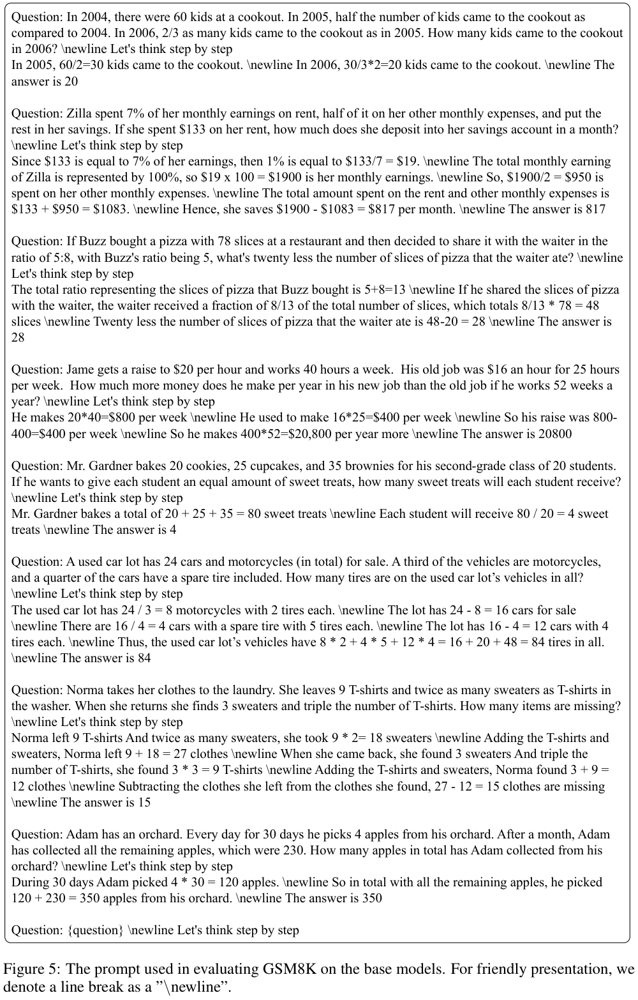
图 5：评估基础模型在 GSM8K 上的表现时使用的提示词。为了便于展示，我们用 “\newline” 表示换行。
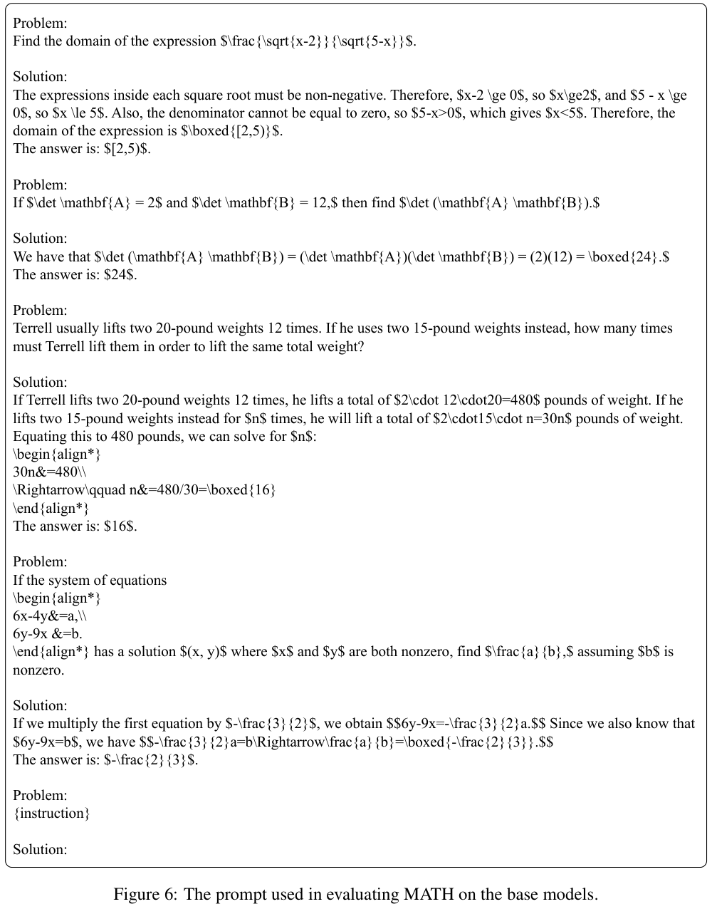
图 6：评估基础模型在 MATH 上的表现时使用的提示词。
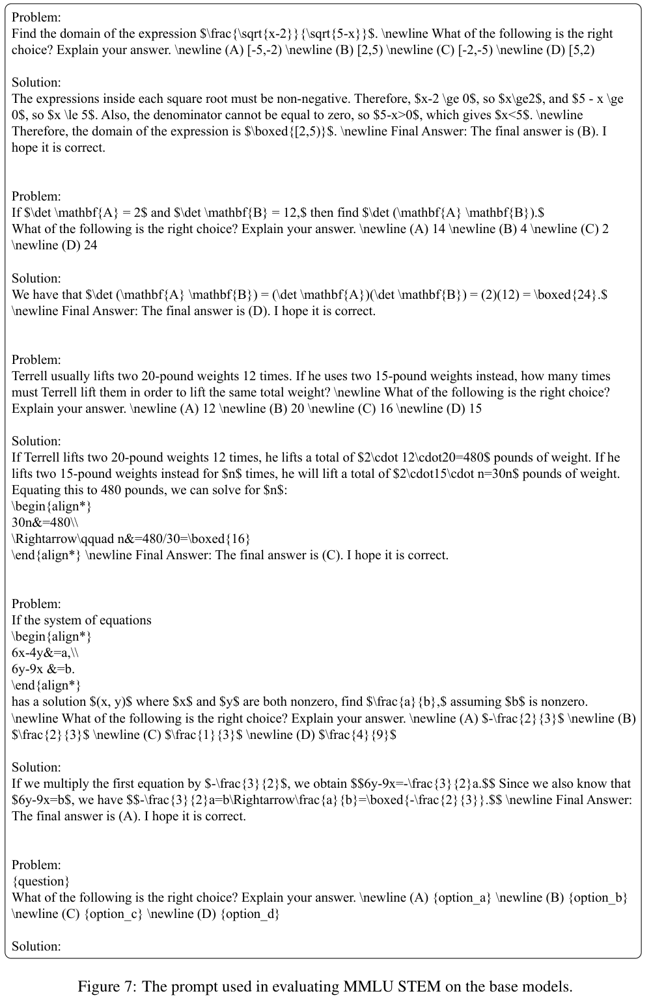
图 7：评估基础模型在 MMLU STEM 上的表现时使用的提示词。
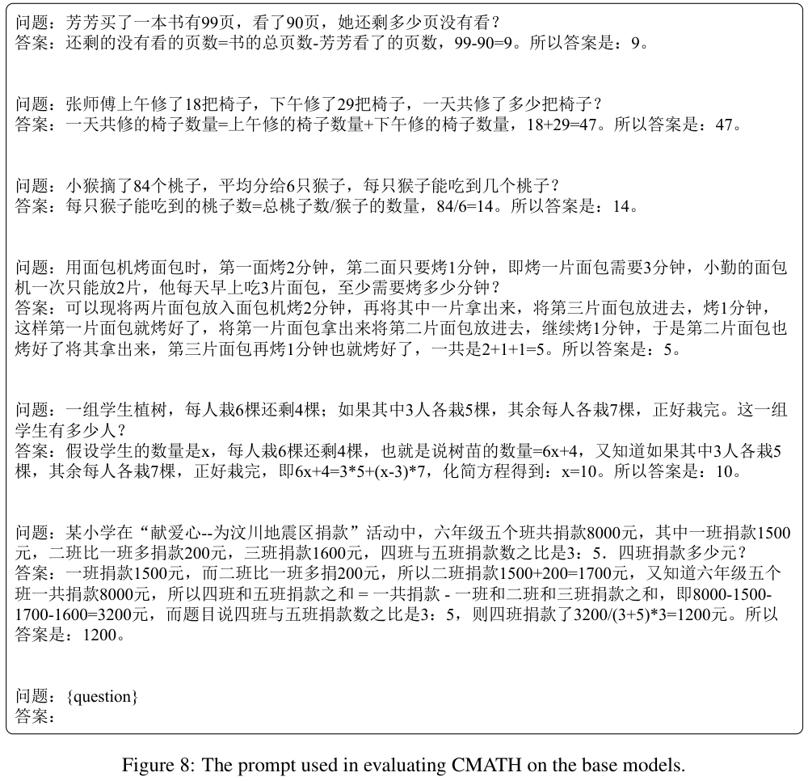
图 8：评估基础模型在 CMATH 上的表现时使用的提示词。
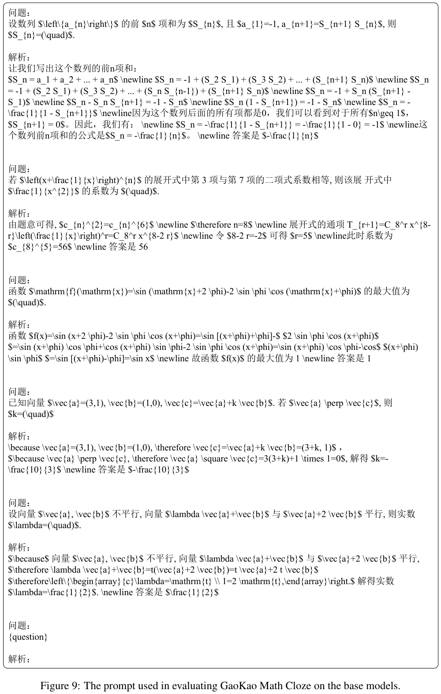
图 9：评估基础模型在 GaoKao Math Cloze 上的表现时使用的提示词。
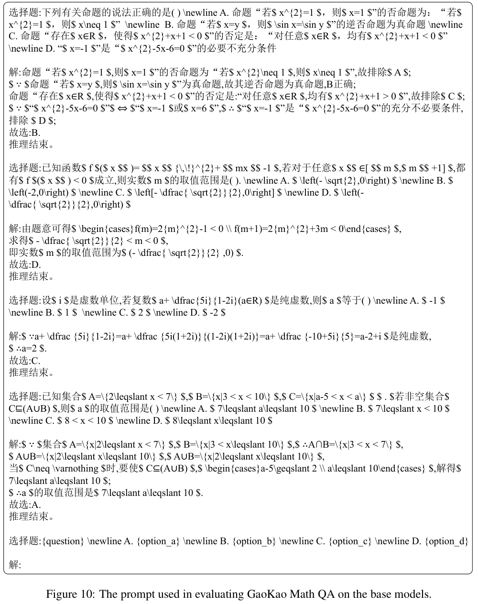
图 10：评估基础模型在 GaoKao Math QA 上的表现时使用的提示词。
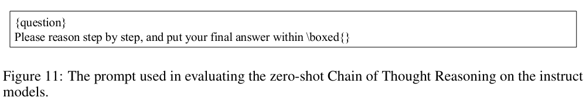
图 11：在指令模型上评估零样本 CoT 推理时使用的提示词。
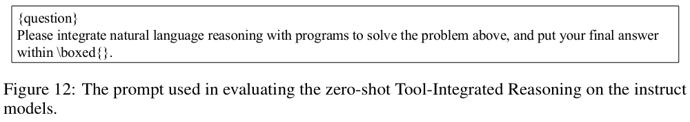
图 12：在指令模型上评估零样本 tool-integrated reasoning 时使用的提示词。
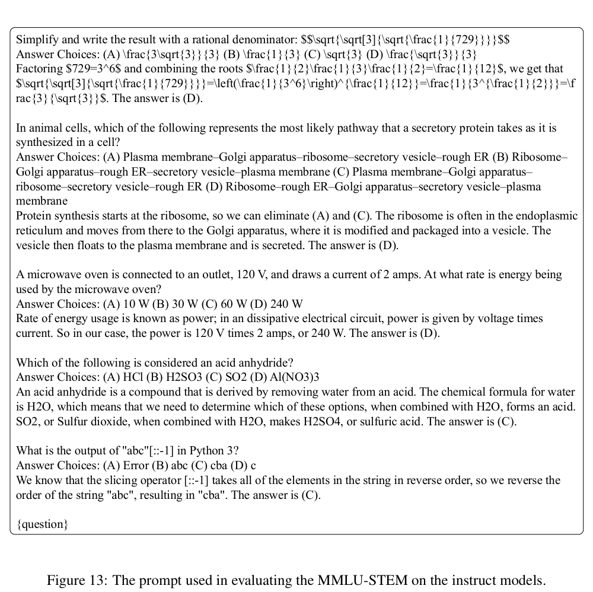
图 13：评估指令模型在 MMLU-STEM 上的表现时使用的提示词。
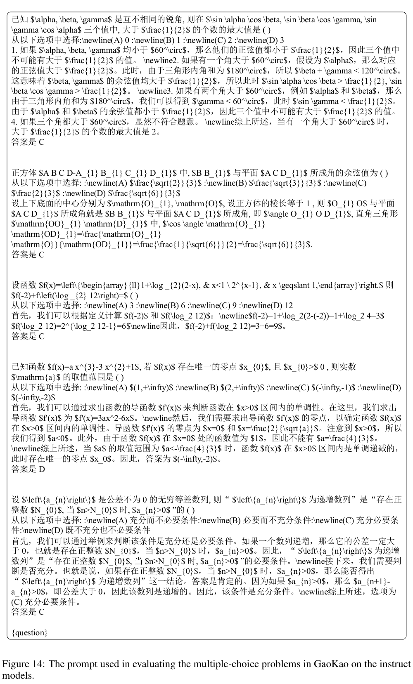
图 14：评估指令模型在 GaoKao 选择题上的表现时使用的提示词。